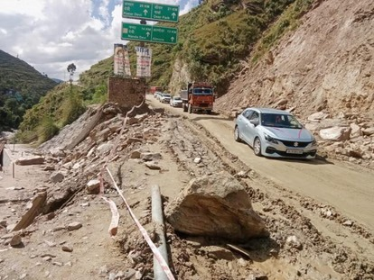
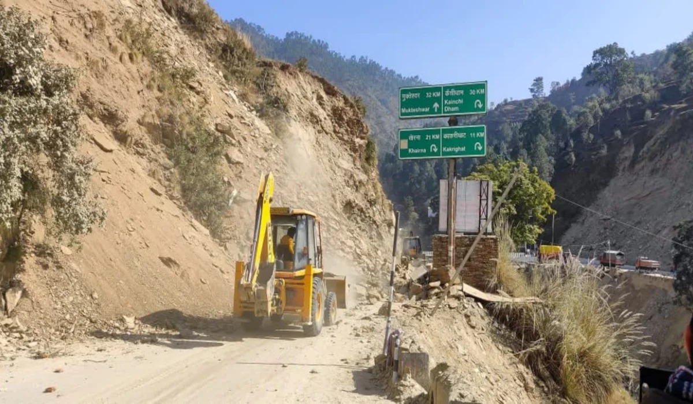
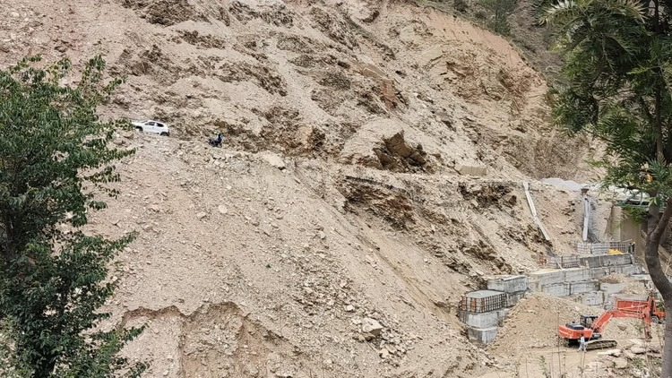
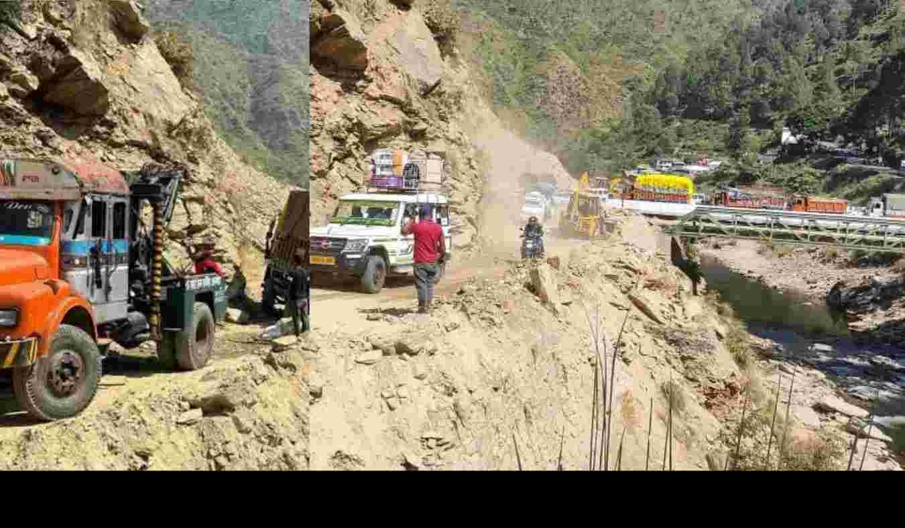

SafeHill needs your location to check nearby disaster risk and weather.
SafeHill helps tourists and local people monitor weather, identify nearby risk zones and stay prepared during landslides and heavy rainfall.
Real-time weather and location information for safer travel.
--
Current temperature--
Current rainfall--
Current windCHECKING
Weather-based awarenessलोकेशन शुरू करने के लिए अनुमति दें।
📍 लाइव लोकेशन: बंद
Loading...
Live data statusWeather is automatically selected according to your location.
Detecting location...
Checking weather risk...
SafeHill checks your location and warns you when you are near a monitored disaster-prone area.
लोकेशन की अनुमति का इंतज़ार है...
Latitude: --
Longitude: --
Checking nearby areas...
Distance: --
Your location is being checked.
Current risk is estimated using weather conditions.
Normal conditions
Moderate rainfall
Heavy rainfall
📍 Monitored Location: Kwarab Pool, Almora
⚠️ Possible Hazards: Landslide, Falling Rocks, Road Blockage
Help improve disaster awareness by reporting landslides, road blockages, heavy rainfall, falling rocks, floods or other emergency situations.
Share the location of the incident.
Upload photos of the affected area.
Help identify dangerous locations.
Support faster emergency response.
Use the SafeHill disaster report form to submit information about an incident.
🚨 Report NowSimple and quick reporting
Important safety guidelines for tourists and local residents.
Check weather updates regularly and avoid landslide-prone areas during continuous rainfall.
Move away from hill slopes immediately. Never stop near loose rocks or unstable ground.
Call Police (112), Ambulance (108), Fire (101) or SDRF during an emergency.
Keep water, medicines, flashlight, power bank and first-aid supplies ready.
Avoid blocked roads and areas with falling rocks. Wait for official clearance.
Follow updates from IMD, SDRF, District Administration and local authorities.
In an emergency, contact the appropriate service immediately.
Kwarab Pool, Almora is a monitored location where heavy rainfall can increase the possibility of landslides, falling rocks and road disruption.

Place: Kwarab Pool, Almora, Uttarakhand
Coordinates: 29.60° N, 79.53° E
Region: Himalayan Region
HIGH RISK DURING HEAVY RAINFALL
View monitored areas and your current location on the map.
Photographs of the Kwarab area and its landslide-prone surroundings.
Heavy rainfall can cause road damage and difficult travel conditions near Kwarab.

Continuous rainfall can increase the possibility of landslides and road blockages.

Loose rocks and soil can fall onto roads during severe weather conditions.

The monitored area can experience road disruption and falling rocks during rainfall.
SafeHill is an educational and disaster-awareness project. Weather-based risk information is intended only for awareness and should not be treated as an official landslide prediction.
Always follow official alerts and instructions issued by IMD, SDRF, District Administration and local authorities.
Tourist Disaster Management App
आपदा को हम रोक नहीं सकते, लेकिन सही समय पर सही सुरक्षा उपाय अपनाकर उसके प्रभाव और नुकसान को कम कर सकते हैं।
भारी बारिश, भूस्खलन या अचानक बाढ़ के संकेत मिलने पर सुरक्षित स्थान पर रहें। अनावश्यक रूप से खतरे वाले क्षेत्र में न जाएँ।
सुरक्षित स्थान पर रहें और जोखिम वाले क्षेत्रों से दूर रहें।
स्थानीय प्रशासन, SDRF और आधिकारिक चेतावनियों का पालन करें। यह वेबसाइट जागरूकता के लिए है, आधिकारिक आपदा चेतावनी सेवा नहीं। लाइव लोकेशन केवल आपकी अनुमति से इस ब्राउज़र में उपयोग होगी।
अलर्ट सिस्टम तैयार है। अपने ब्राउज़र में ध्वनि की अनुमति चालू करें।
🤝 SafeHill Social Incident Connect
आपदा की फोटो/वीडियो, घटना की तारीख और लोकेशन साझा करें। सार्वजनिक Feed में रिपोर्ट Admin की जाँच के बाद ही दिखेगी।
📤 नई घटना की रिपोर्ट
भूस्खलन, सड़क बंद, बाढ़, दरार या दूसरी आपदा की रिपोर्ट भेजें। कृपया केवल वास्तविक और सुरक्षित रूप से ली गई सामग्री भेजें।
GPS केवल आपकी अनुमति से लिया जाएगा। यह समुदाय-आधारित रिपोर्टिंग सुविधा है, सरकारी आपदा चेतावनी सेवा नहीं। आपात स्थिति में 112 / स्थानीय प्रशासन से संपर्क करें।
🌍 Community Incident Feed
🛡️ Admin Moderation
Admin लॉगिन से लंबित रिपोर्ट देखो और Approve/Reject करो। पहले Firebase सेटअप और सुरक्षा नियम लागू करना जरूरी है।